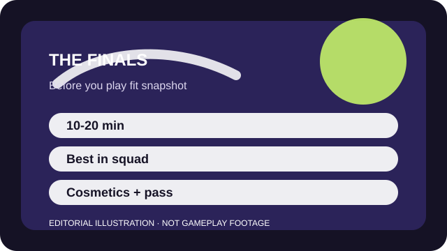

BEFORE YOU PLAY
What this page is and is not
This is a sourced editorial fit profile. It is designed to help with a yes-or-no play decision, and it does not claim a scored hands-on review.
If map destruction sounds exciting rather than messy, the game has a clear niche. If you prefer predictable sightlines and tidy readouts, the same chaos can be its biggest weakness.
The first-session loop to judge is simple: Chase cashout objectives while using gadgets, movement, and destruction to create better fights than the other team expects.
Unlocks and ranked goals help, yet the durable appeal is learning how destruction changes each objective.

FIT SNAPSHOT
THE FINALS at a glance
| Genre | Team objective shooter |
|---|---|
| Platforms | PC, PlayStation, Xbox |
| Business model | Free-to-play objective shooter with cosmetic bundles and seasonal passes. |
| Typical session | 10-20 minute matches that still benefit from a regular squad. |
| Play style | destruction-driven squad shooter |
| Learning barrier | The rules are easy to describe, but destruction, class roles, and cashout timing create many moving parts quickly. |
| Social shape | Playable solo, but much better with a duo or trio who can coordinate pushes, revives, and retreats. |
WHO IT FITS
Best fit, likely friction, and the social reality
squads who want destructible arenas, objective chaos, and creative gadget planning
players who need very clean visual information or low-chaos fights
Playable solo, but much better with a duo or trio who can coordinate pushes, revives, and retreats.
Unlocks and ranked goals help, yet the durable appeal is learning how destruction changes each objective.
FIRST SESSION PLAN
How to test the fit in one evening
- Start on a medium or balanced build unless you already know you want a specialist role.
- Follow the cashout objective instead of treating the game like team deathmatch.
- Pay attention to how floor and roof destruction changes safe routes.
- Judge the fit after a few matches where revives and resets actually matter, not after one highlight reel round.
Use the first session to answer these fit questions instead of judging rank, win rate, or store value immediately.
- Do you like improvisation more than tight competitive control?
- Will visual chaos feel fun or tiring after several sessions?
- Are you willing to queue with at least one reliable partner if solo matchmaking feels noisy?
TIME, COST, AND COMMITMENT
What you are really signing up for
| Session budget | 10-20 minute matches that still benefit from a regular squad. |
|---|---|
| Social demand | Playable solo, but much better with a duo or trio who can coordinate pushes, revives, and retreats. |
| Progression shape | Unlocks and ranked goals help, yet the durable appeal is learning how destruction changes each objective. |
| Spending pressure | Core access is free. Monetization is mostly cosmetic and seasonal. |
Individual matches are short, but understanding cashout pacing and class roles takes more deliberate reps than the bright presentation suggests.
Core access is free. Monetization is mostly cosmetic and seasonal.
SOURCES AND LIMITS
What was checked, and what can change
- Class balance and gadget strength can swing with seasonal patches.
- Event modes and ranked structures may change what the beginner path looks like.
- Cosmetic pass cadence is separate from whether the core objective loop suits you.
This profile uses official game pages and defensible general product knowledge to frame the player fit. It does not claim live testing across every platform, accessibility need, or current event rotation.